实时Web应用
传统的Web应用：浏览器发起一个HTTP请求到ASP.NET Core的Web服务器。服务器处理请求，并返回响应，并且在payload中会包含请求的数据。
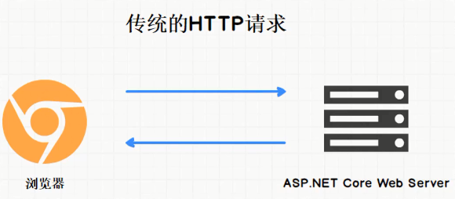
实时的Web应用：不用从浏览器发起，服务器主动通知客户端数据发生变化。如网页版的即时通信工具，网页直播，网页游戏等。SignalR用来实现实时的Web应用。
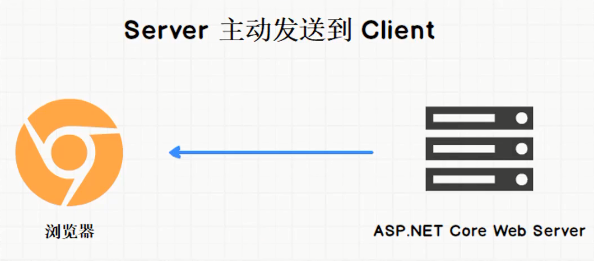
SignalR的底层技术
SignalR使用了三种“底层”技术来实现实时Web。它们分别是：
- Long Polling
- Server Sent Events
- WebSocket
Polling
Polling是一种实现实时Web的一种笨方法，它就是通过定期向服务器发送请求，来查看服务器的数据是否发生变化。如果服务器数据没有变化，那么就返回204 No Content。如果有变化就把最新的数据发送给客户端。Polling很简单，但是比较浪费资源。SignalR没有采用Polling技术。

Long Polling
Long Polling和Polling有类似的地方，客户端都是发送请求到服务器。但不同之处是：如果服务器没有新数据要发给客户端的话，那么服务器会继续保持连接，直到有新的数据产生，服务器才把新的数据返回给客户端。
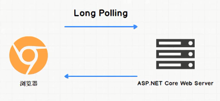
如果请求发出后一段时间内没有响应，那么请求就会超时。这时，客户端会再次发出请求。
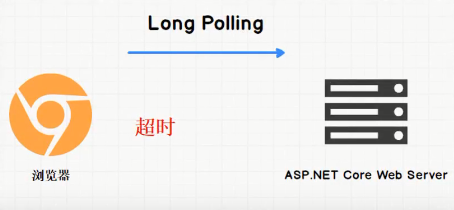
Server Sent Events (SSE)
使用SSE的话，Web服务器可以在任何时间把数据发送到浏览器，可以称之为推送。而浏览器则会监听进来的信息，这些信息就像流数据一样，这个连接也会一直保持开放，直到服务器主动关闭它。
浏览器会使用一个叫做EventSource的对象来处理传过来的信息。
优点：使用简单，使用HTTP协议，自动重连，不支持老的浏览器，比Polling和Long Polling好用。
缺点：针对SSE，很多浏览器存在最大并发连接数的限制，只能发送文本信息，只能单向通信。
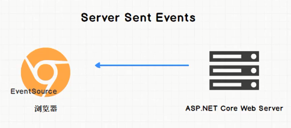
WebSocket
WebSocket是不同于HTTP的另一个TCP协议，它使得浏览器和服务器之间的交互式通信变得可能。使用WebSocket，消息可以从服务器发往客户端，也可以从客户端发往服务器，并且没有HTTP那样的延迟。信息流没有完成的时候，TCP Socket通常是保持打开的状态。
使用现代浏览器时，SignalR大部分情况下都会使用WebSocket，这也是最有效的传输方式。
- 全双工通信：客户端和服务器可以同时往对方发送消息。
- 并且不受SSE那个浏览器连接数限制（6个），大部分浏览器对WebSocket连接数的限制是50个。
- 消息类型：可以是文本和二进制，WebSocket也支持流媒体（音频和视频）。
其实正常的HTTP请求也使用了TCP Socket。WebSocket标准使用了握手机制把用于HTTP的Socket升级为使用WS协议的WebSocket socket。
WebSocket的生命周期
在TCP Socket中，一个正常的HTTP请求，要求服务器更新Socket并协商，这个过程称为HTTP握手。之后，消息就可以在Socket中来回传送，直到Socket被主动关闭，关闭的原因也会被通信。
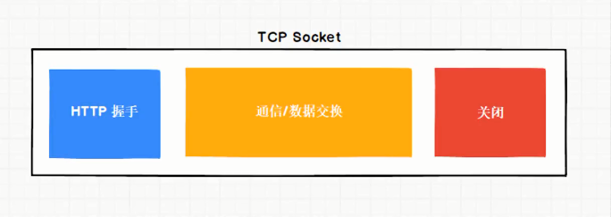
HTTP握手
- 每一个WebSocket开始的时候都是一个简单的HTTP Socket。
- 客户端首先发送一个GET请求到服务器，来请求升级Socket。
- 如果服务器同意的话，这个Socket从这时开始，就变成了WebSocket。
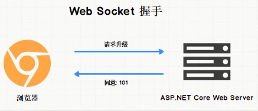
消息类型
WebSocket的消息类型，可以是文本，二进制。也包括控制类的消息：Ping/Pong，和关闭。
每个消息由一个或多个Frame组成。
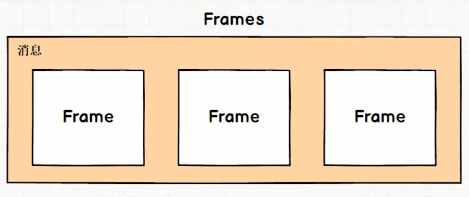
SignalR原理
SignalR
SignalR是一个.NET Core/.NET Framework的开源实时框架。SignalR可使用WebSocket，Server Sent Events和Long Polling作为底层传输方式。
SignalR基于这三种技术构建，抽象于它们之上，它让你更好的关注业务问题而不是底层传输技术问题。
SignalR这个框架分服务器端和客户端，服务器端支持ASP.NET Core和ASP.NET；而客户端除了支持浏览器里的javascript以外，也支持其他类型的客户端，例如桌面应用（需通过Nuget安装某些库）。
SignalR回落机制
SignalR使用的三种底层传输技术分别是WebSocket，Server Sent Events和Long Polling。
- WebSocket仅支持比较现代的浏览器，Web服务器也不能太老。
- Server Sent Events情况可能好一点，但是也存在同样的问题。
- Long Polling一般情况都是支持的。
所以，SignalR采用了回落机制，SignalR有能力去协商支持的传输类型。
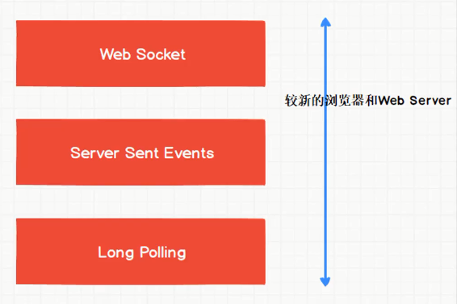
注意：SignalR默认采用回落机制，但是也可以禁用回落机制，只采用其中一种传输方式。
RPC
RPC(Remote Procedure Call)。它的优点就是可以像调用本地方法一样调用远程服务。
SignalR采用RPC范式来进行客户端与服务器端之间的通信。
SignalR利用底层传输来让服务器可以调用客户端的方法，反之亦然，这些方法可以带参数，参数也可以是复杂对象，SignalR负责序列化和反序列化。
Hub
Hub是SignalR的一个组件，运行在ASP.NET Core应用里，是服务器端的一个类。
Hub使用RPC接受从客户端发送来的消息，也能把消息发送给客户端。所以它就是一个通信用的Hub。
注意：
- 在ASP.NET Core里，自己创建的Hub类需要继承于基类的Hub。
- 在Hub类里，我们就可以调用所有客户端上的方法了。同样客户端也可以调用Hub类里的方法（方法名不变）。
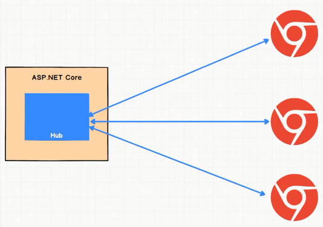
Hub协议
Hub协议就是一种用来序列化和反序列化的格式。
调用的方法时候可以传递复杂参数，SignalR可以将参数序列化和反序列化。这些参数被序列化的格式就叫做Hub协议。
- Hub协议的默认协议是JSON，还支持另外一个协议是MessagePack，它是二进制格式的，比JSON更加紧凑，处理起来更简单快速。
- 此外，SignalR也可以扩展使用其他协议。
横向扩展
情景：随着系统运行，需要将应用运行在多个服务器上。
问题：负载均衡器会保证每个进来的请求按照一定的逻辑分配到可能是不同的服务器上。
使用WebSocket
在使用WebSocket的时候，没什么问题。因为一旦WebSocket的连接建立，就像在浏览器个那个服务器之间打开了隧道一样，服务器是不会切换的。
使用Long Polling
如果使用Long Polling，可能会出现问题。因为使用Long Polling的情况下，每次发送消息都是不同的请求，而每次请求可能会到达不同的服务器。不同的服务器可能不知道前一个服务器通信的内容，因此会造成问题。
针对这个问题，需要使用Sticky Session（粘性回话）。
Sticky Session有很多种实现方式，主要介绍以下这种：
作为第一次请求的响应的一部分，负载均衡器会在浏览器里面设置一个Cookie，来表示使用过这个服务器。在后续的请求里，负载均衡器读取Cookie，然后把请求分配给同一个服务器。
SignalR小例子
服务器端
基本配置
创建ASP.NET Core空项目SignalRDemo。
在Startup.cs类的ConfigureServices方法中添加依赖注入，这里使用了MVC和SignalR。
public void ConfigureServices(IServiceCollection services) |
然后修改Startup.cs类的Configure方法，添加静态文件中间件，配置路由。
public void Configure(IApplicationBuilder app, IWebHostEnvironment env) |
项目右键，新建Services文件夹，在里面添加CountService.cs。
public class CountService |
回到Startup.cs编辑ConfigureServices方法，配置CountService类为单例模式。
services.AddSingleton<CountService>(); |
添加Hub
项目右键，添加CountHub.cs。
public class CountHub : Hub |
在startup.cs的Configure方法中，UseEndpoints添加MapHub。
endpoints.MapHub<CountHub>(pattern: "/counthub"); |
项目右键，添加Controllers文件夹，然后新建CountController.cs，并配置路由。
[] |
通信中，通常需要获取客户端的名称。在Hub类中有一个返回HubCallerContext类的Context属性，HubCallerContext类有一个ConnectionId属性，这个ID就是连接进来的客户端的唯一标识。通过ConnectionId可以获取客户端的信息，并调用客户端方法。
在CountHub类中，重写Hub类的OnConnectedAsync方法。
public override async Task OnConnectedAsync() |
客户端
通过libman安装SignalR的客户端库。
项目右键，添加，客户端库，提供程序选择unpkg，库输入@aspnet/signalr@next。文件只需勾上signalr.js即可。
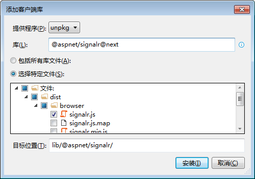
项目右键，添加wwwroot文件夹。然后把lib文件夹整个复制到wwwroot下（这里先不用bundleConfig）。然后在wwwroot下，添加index.html和index.js。
index.html代码如下。
|
index.js代码如下。
let connection = null; |
运行和测试
运行项目。浏览器上输入index.html，点击submit，查看效果。
首先出现的是“Someone called, parameters:abcd”，然后“0-9”大约每秒更新一次，最后是“Finished”。
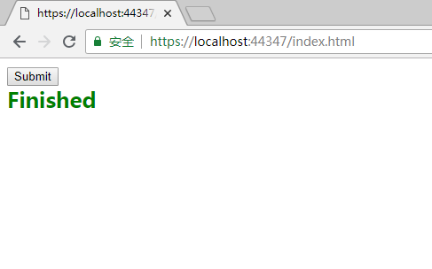
解析：
- 点击submit的时候，请求到达后台Controller的Post方法。后台的Post方法调用客户端的someFunc方法，并传递对象参数abcd。客户端someFunc方法接收参数并把Div的内容替换为“Someone called, parameters:abcd”。
- 同时后台Post方法返回响应Accepted，并传递参数1，客户端接收后，把参数转化为字符串，然后调用后台Hub的GetLatestCount方法，并传递参数id。
- GetLatestCount方法的内容是，获取最新的count，并调用客户端的ReceiveUpdate方法，把count作为参数传过去。循环10次。客户端的ReceiveUpdate方法接收count并把Div的内容更新为count。
- GetLatestCount方法的循环结束后，调用客户端的Finished方法，客户端把Div的内容更新为“Finished”。
Chrome控制台
- 建立连接之后，就会有negotiate请求。这个请求包含客户端的唯一标识connectionId，浏览器支持的传输方式。
- counthub?id请求，是根据传输方式的具体请求，有Long Polling和WebSocket等。
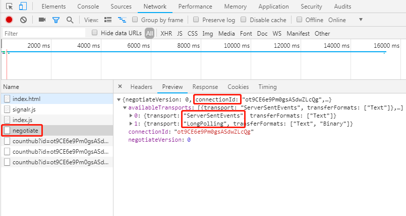
另外，客户端构建connection时，可以使用参数指定SignalR的传输方式。
// 构建connection |